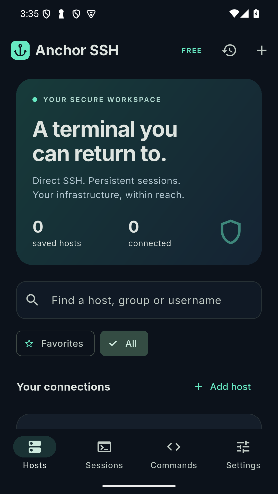

Keep your session
With tmux installed on your server, reconnect to the same remote shell after a network interruption. Server shutdowns and terminated tmux sessions cannot be recovered.
Your servers. Your workspace. A real SSH terminal with persistent sessions, thoughtful controls, and credentials protected on your device.
Version 3.0.1 · Android 7.0+ · 59.7 MiB · Signed APK

With tmux installed on your server, reconnect to the same remote shell after a network interruption. Server shutdowns and terminated tmux sessions cannot be recovered.
ANSI/VT emulation, scrollback, monospace type, terminal tabs, command shortcuts, and copy and paste controls.
Password or private-key authentication, host-key checks, Android Keystore protection, and screen capture protection enabled by default.
tmux on your remote server before using persistent sessions. The app explains when it is missing; an ordinary SSH connection cannot guarantee process survival.This download is signed with the developer's current review key. A future Google Play version may use a different app signing key and require uninstalling this review build. Export connection metadata first; credentials must be entered again.
SHA-256 for anchor-ssh-3.0.1-review.apk:
bd82093b97610384ed0aab83b499cc0cdea808e47cf68c7f58ee2bf331fc9c96
On macOS, compare the output of shasum -a 256 anchor-ssh-3.0.1-review.apk with this value. Download checksum.
SSH connections go directly from the app to your chosen server. This review build has no public cloud backend configured. Connection credentials remain on your device unless you explicitly copy, export, or share information. Terminal logs may contain secrets; review them before sharing.
Found a problem? Email contact@ofcodedev.me with your Android version and a description. Never include passwords, private keys, or sensitive terminal output.